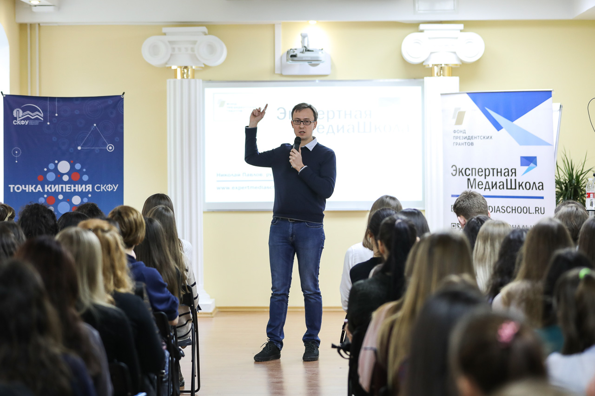
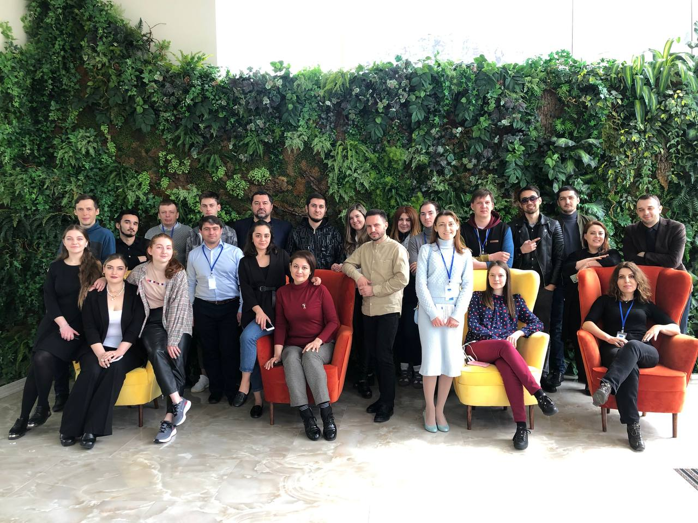
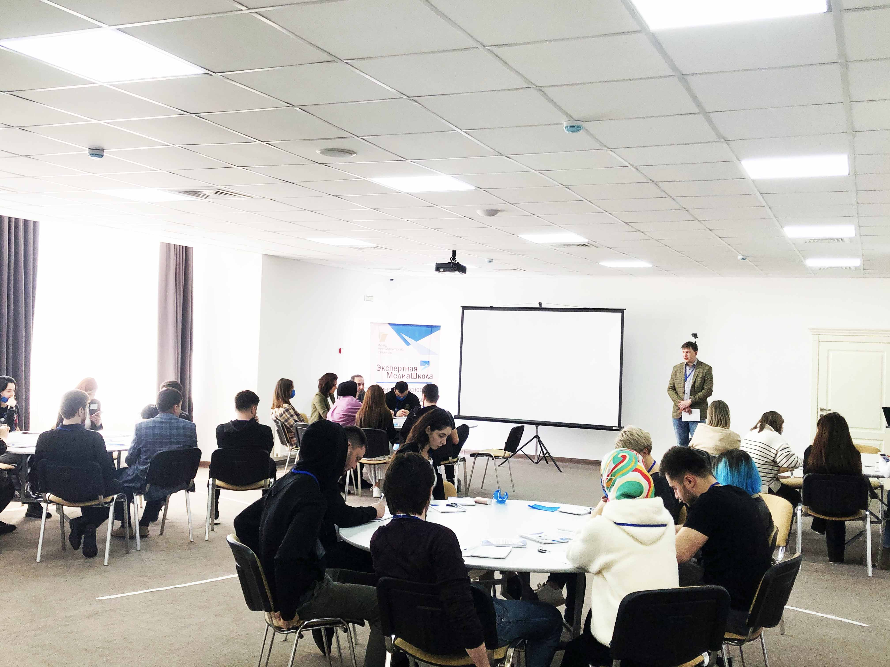

«Экспертная Медиашкола» открывает двери в информационное пространство
В 2019-2021 годах на территории Северо-Кавказского федерального округа реализуется уникальный проект — «Экспертная Медиашкола»
Перед организаторами проекта стоит важная задача: выявить среди молодежи региона одаренных журналистов и блогеров и подготовить их к работе в современном публичном информационном пространстве.
В феврале-марте 2020 года состоялся первый этап проекта — региональные семинары. Организаторы «Экспертной Медиашколы» посетили Пятигорск, Черкесск, Карачаевск, Нальчик, Магас, Владикавказ, Грозный, Махачкалу, Ставрополь с циклом лекций. Всего было организовано 11 семинаров, в которых приняли участие свыше 900 учащихся ведущих региональных учреждений высшего образования различных направлений подготовки и молодые специалисты.
Спикерами семинаров выступили ведущий информационно-образовательной рубрики проекта, член Союза журналистов России Владимир Князев и координатор проекта, специалист по связям с общественностью Виктория Лебедева. Обсуждались многие проблемы современных медиа: причины и источники возникновения фейковых новостей, способы борьбы с ними и предотвращения их негативного влияния, механизм информационных войн и алгоритм реагирования на них. Кроме того, особое влияние уделялось обучению принципам работы в социальных сетях, созданию медиаконтента изучению психологии целевой аудитории.
Осуществлялось и сквозное тестирование базовых знаний молодежи о работе в медиапространстве: его результаты, а также прохождение онлайн-подготовки на сайте проекта и запись видеопрезентации определяли возможность молодых людей принять участие в межрегиональных семинарах.
По итогам конкурсного отбора организаторы приглашали по 35 наиболее отличившихся молодых специалистов и студентов на четырехдневные семинары, прошедшие в поселке Архыз Карачаево-Черкесской Республики и городе Лермонтов Ставропольского края. Участников мероприятия ждали 35 насыщенных образовательных часов, а также десятки федеральных и региональных спикеров, среди которых были начальник отдела мониторинга и анализа СМИ Управления информации и взаимодействия со СМИ Аппарата Совета Федерации Федерального Собрания Российской Федерации Ольга Андерсон, президент межрегиональной общественной организации журналистов, освещающих межэтническую тематику «Гильдия межэтнической журналистики» Маргарита Лянге, кандидат исторических наук, генеральный директор библиотек юго-востока Москвы Сергей Чуев, специалисты АНО «Диалог» и многие другие.
Участие в «Экспертной Медиашколе» не заканчивается посещением семинаров: в ходе проекта молодежь определилась с вектором развития своих блогов. Помогут им с этим организаторы мероприятия: начиная от подготовки контента и заканчивая его продвижением поддержку окажут профессиональные копирайтеры, дизайнеры, иллюстраторы, SMM-специалисты. Кроме того, участникам семинара, зарекомендовавшим себя с положительной стороны, предлагалось дальнейшее трудоустройство у партнеров проекта.
Проект “Экспертная Медиашкола” реализуется с использованием гранта Президента Российской Федерации на развитие гражданского общества, предоставленного Фондом президентских грантов.